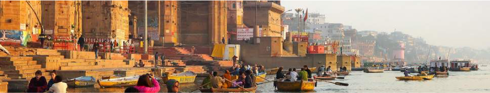
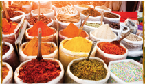
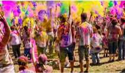
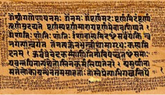
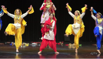

Guest of Honor
India

The ancient civilization of India differs from the other civilizations of the world, in that its traditions have been preserved without a break down to the present day. Indian culture is a mosaic of cultures, religions, races, languages, attitudes and world views; hence the concept of Indian literature also is open, inclusive, dynamic and flexible accommodating diverse voices, of the majority as well as of the religious, linguistic, sexual and ethnic minorities.
Read more...
Cultural Activities

Gastronomy
Holi Festival
Sanskrit Lit
Punjabi Dance
